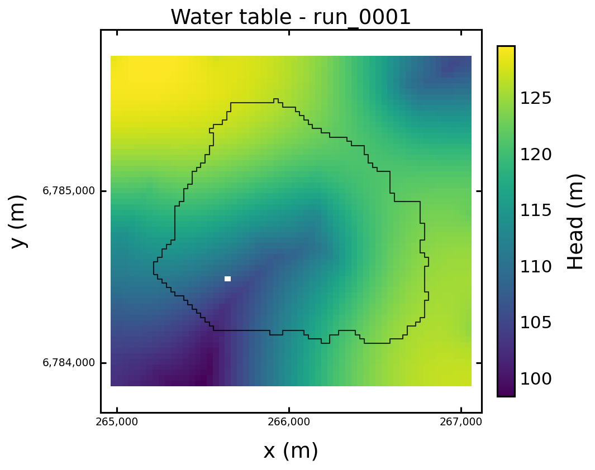
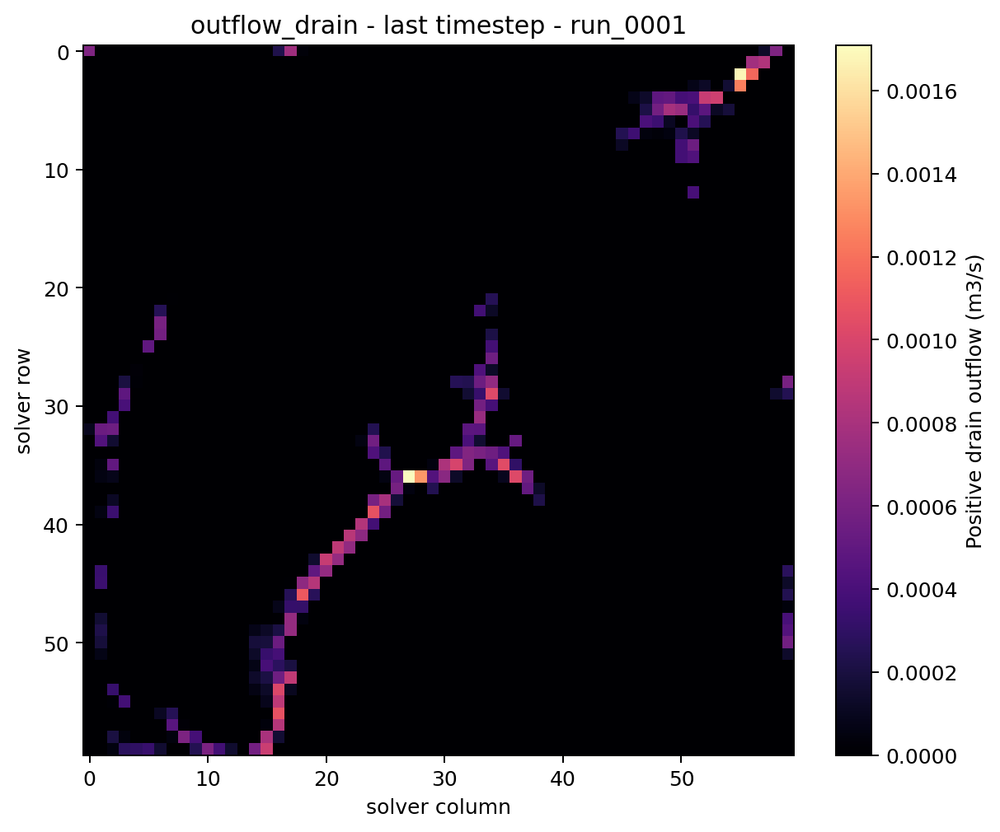
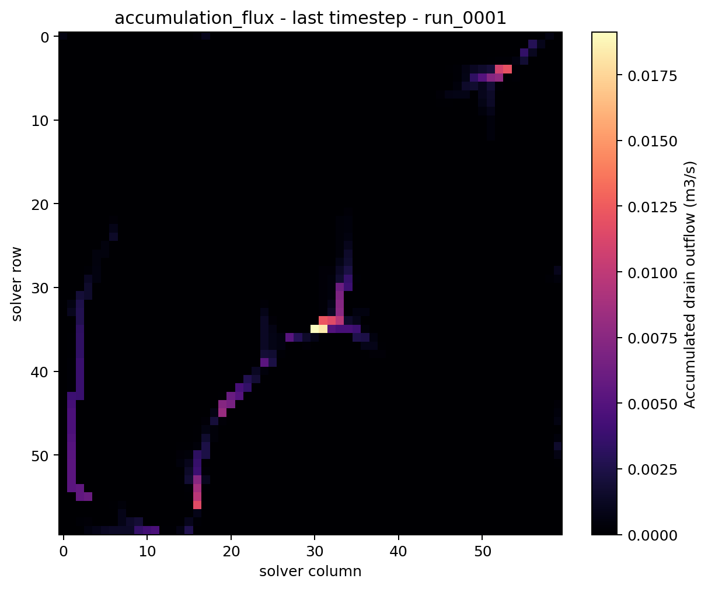
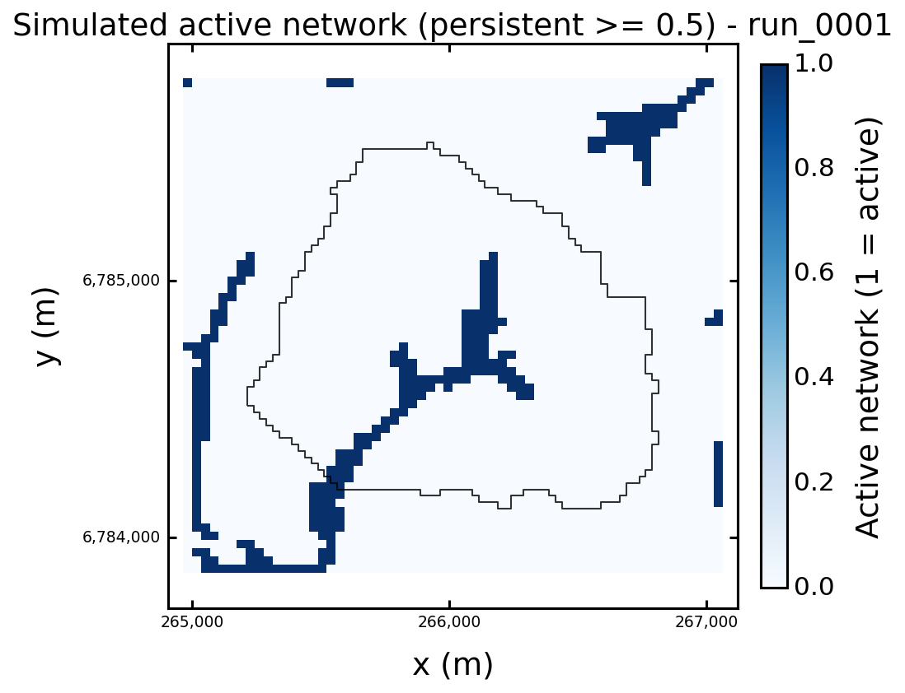

Simulated Active Network#
Purpose#
The simulated active network is the part of the drainage support that becomes active because of the groundwater-flow solution.
It is not loaded from an external river file and it is not the DEM-derived
generated hydrographic network. It is a post-processed signal derived from
cell-by-cell simulated drainage outflow.
This page explains the three levels that should not be confused:
local drain outflow at each cell,
downstream accumulation of that outflow,
a thresholded or persistence-based active-network mask.
Conceptual Contract#
HydroModPy keeps the raw simulated drainage signal as cell fields before any vector network is declared.
For a steady-network question, distinguish the steady-flow scenario from the
transient occupancy rule. A simulated steady active network should preferably
be derived from a representative flow_regime = "steady" run, then compared
with the observed reference network. The transient always_active mask
only means active at all timesteps of the analysed chronicle.
Field or view |
Meaning |
How to read it |
|---|---|---|
|
Positive groundwater discharge through drains, summed over model layers. |
Local source term. A positive value means that groundwater leaves the aquifer through the drain condition in that cell. |
|
Downstream accumulation of positive drain discharge. |
Network signal. High values mark cells that receive upstream active drainage contributions. |
|
Boolean or continuous mask derived from |
Display and metric layer. The threshold and time rule must be explicit. |
The sign convention is intentionally normalized at the HydroModPy result level:
outflow_drain is positive when water leaves the groundwater system. This is
different from raw MODFLOW cell-budget records, where leaving the aquifer is
usually stored with a negative sign.
Why Accumulation Is Not Just Another Drain Map#
outflow_drain and accumulation_flux answer different questions.
outflow_drain answers:
“Where does the model release water locally through the drainage package?”
accumulation_flux answers:
“If local drainage contributions are routed downslope through the mesh, which cells form the connected active drainage structure?”
This distinction matters because a downstream cell may have a small local drain outflow but a large accumulated flux if many upstream cells drain toward it. In figures, this usually makes confluences and persistent branches easier to see.
Where This Page Fits In The Examples#
Use this page as the MODFLOW 6 result-contract example. It shows how a solver run becomes an interpretable active-network diagnostic:
head -> outflow_drain -> accumulation_flux -> simulated_active_network
For the complete list of examples, commands, and files to open, see Worked Examples. For the current distinction between supported fields, demonstrated examples, and non-contracts, see Status And Limitations.
MODFLOW 6 Validation Example#
The following figures come from a real MODFLOW 6 run executed through the HydroModPy simulation workflow. The run has three stored timesteps and a structured 60 x 60 MODFLOW 6 support. The MODFLOW 6 extractor writes the solver mesh topology from the grid binary file, so the result layer can reshape fields on the solver grid instead of forcing the original DEM shape.
{kind=link}

Fig. 28 Water-table field for the validation run. This is the groundwater state from which head-dependent drainage outflow is produced.#
{kind=link}

Fig. 29 outflow_drain on the last timestep. The field is local and positive:
it shows where groundwater leaves the aquifer through the drain condition.#
{kind=link}

Fig. 30 accumulation_flux on the last timestep. The spatial pattern follows
the same active-drainage support, but values increase along downstream
paths because upstream contributions are accumulated.#
{kind=link}

Fig. 31 simulated_active_network figure. This is a computed cell-mask view
produced from accumulation_flux. It is useful for inspection and
comparison, but it is not yet a stored vector line network.#
For this validation run, the last timestep diagnostic summary was:
Field |
Shape |
Max |
Sum |
Non-zero cells |
|---|---|---|---|---|
|
|
|
|
|
|
|
|
|
|
Do not interpret the sum of accumulation_flux as a water-budget total. It
is a routed network diagnostic: the same upstream water contribution may be
counted again along downstream cells. Use budget tables and outflow_drain
for mass-balance interpretation.
Current MODFLOW 6 Implementation Path#
For flow/modflow6, HydroModPy now uses the following result path:
MODFLOW 6 produces heads and budget components.
The output adapter reads the MODFLOW 6 grid binary file when available.
The catalog stores:
mesh/vertices,mesh/face_node_connectivity,mesh/topography,mesh/z_interfaces.
The derived-field extractor converts raw DRN budget values to positive
outflow_drain.The extractor computes
accumulation_flux:structured D8 routing when a regular raster support is available,
mesh-graph downhill routing when a plottable face connectivity exists,
local positive outflow as a conservative fallback.
Run.fields(...)returns fields on the solver support when that support differs from the geographic DEM grid.The display layer enables
simulated_active_networkwhen bothaccumulation_fluxand plottable mesh topology are present.
Programmatic Reading#
After a run is available through Run, inspect the fields directly:
Render the active-network figure when the capability is available:
if "simulated_active_network" in run.display_capabilities:
run.plot("simulated_active_network", save="figures")
Compare the same active-network view against the observed reference
network when that role exists:
overlap = run.cell_field_network_overlap_metrics(
network_role="reference",
variable="accumulation_flux",
mode="persistent",
threshold=0.0,
persistence_threshold=0.5,
)
distance = run.cell_field_network_distance_metrics(
network_role="reference",
variable="accumulation_flux",
mode="persistent",
threshold=0.0,
persistence_threshold=0.5,
)
overlap gives coverage, precision, F1 and Jaccard on mesh cells.
distance gives bidirectional planar cell-centroid distances. It is a
current diagnostic, not the future downslope DEM-routing criterion.
For steady runs, do not pass a time mode unless you intentionally want to force a diagnostic snapshot. The default is the steady-state active-network field:
mask = run.cell_field_active_mask(
variable="accumulation_flux",
threshold=0.0,
)
For transient runs, select the time rule explicitly:
mask = run.cell_field_active_mask(
variable="accumulation_flux",
mode="persistent",
threshold=0.0,
persistence_threshold=0.5,
)
The main modes are:
last: active cells on one timestep;any: active at least once;persistent: active for at least a declared fraction of timesteps;always_active: active at every analysed timestep;persistence: continuous active-time fraction.
Use steady for the representative steady-flow concept. The transient
always_active mode only means active at every stored timestep of the chosen
analysis window, and should not be used as a synonym for a steady active
network.
What This Is Not Yet#
The simulated active network is currently a computed cell-mask and metric
layer. HydroModPy does not yet automatically persist a canonical vector feature
named hydrographic_network_simulated_active.
That distinction is deliberate.
Before vectorization becomes a stable contract, the project still needs to choose:
the default activation threshold;
whether the canonical representation is one steady network, one transient summary, or several named networks;
how much simplification or line extraction should be applied;
whether the first canonical representation should be raster-like, vector-like, or both.
Until those choices are fixed, the safest interpretation is:
use
outflow_drainfor local drainage outflow and budget reasoning;use
accumulation_fluxfor active-branch detection;use
simulated_active_networkfigures and overlap metrics for inspection;do not assume that a stored vector hydrographic-network role exists.